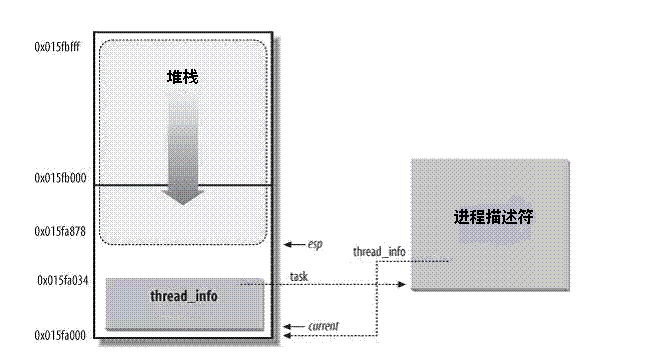

Linux调度——进程描述符
Contents
在linux系统中，每个进程都会有自己的进程描述符，它用结构体struct task_struct来表示，其描述了一个具体进程的所有信息。
本文对进程描述符进行了详细的介绍。
进程描述符:task_struct
struct task_struct相对较大，在64位系统上，它大约有4.1KB。但考虑到该结构体内包含了内核管理一个进程所需的所有信息，那么它的大小也算相当小了。
在内核中，我们需要非常高效的获取进程的struct task_struct结构体，在现在的内核版本中，会在内核栈底（对于向下增长的栈来说）创建一个新的结构struct thread_info:
struct thread_info {
struct task_struct *task; /* main task structure */
struct exec_domain *exec_domain; /* execution domain */
__u32 flags; /* low level flags */
__u32 status; /* thread synchronous flags */
__u32 cpu; /* current CPU */
int preempt_count; /* 0 => preemptable,
<0 => BUG */
mm_segment_t addr_limit;
struct restart_block restart_block;
void __user *sysenter_return;
#ifdef CONFIG_X86_32
unsigned long previous_esp; /* ESP of the previous stack in
case of nested (IRQ) stacks
*/
__u8 supervisor_stack[0];
#endif
unsigned int sig_on_uaccess_error:1;
unsigned int uaccess_err:1; /* uaccess failed */
};
该结构体中的task域中存放着指向该任务实际task_struct的指针。而struct task_struct中的stack域指向了该进程的内核栈的栈底（对于向下增长的栈来说）。
task_struct和内核栈的关系如下图所示：

在x86-64位系统上，进程内核栈的大小为16KB，用如下数据结构表示：
union thread_union {
struct thread_info thread_info;
unsigned long stack[THREAD_SIZE/sizeof(long)];
};
我们可以使用crash工具查看struct task_struct的stack域和进程thread_info的关系，这里我查看了系统上init进程（进程号为1）的信息：
crash> union thread_union
union thread_union {
struct thread_info thread_info;
unsigned long stack[2048];
}
SIZE: 16384 //这里可以看出内核栈大小为16KB。
crash> task -R stack 1
PID: 1 TASK: ffff95c499450000 CPU: 1 COMMAND: "systemd"
stack = 0xffff95c49944c000,
crash> thread_info.task 0xffff95c49944c000
task = 0xffff95c499450000